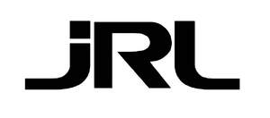

Trade Mark Journal No.2025/052 26 December 2025
UK00004310296 15 December 2025 (35)

International priority date claimed: 18 November 2025
(European Union Intellectual Property Office (EUIPO))
(019277798)
- Class 35
- Online retail services relating to cosmetics; Retail services in relation to hair products; Retail services in relation to headgear; Online retail store services relating to cosmetic and beauty products; Retail services in relation to lubricants; Retail services in relation to downloadable virtual headwear; Mail order retail services for cosmetics; Online retail services in relation to downloadable virtual headwear; Retail services in relation to toiletries; Retail services in relation to fashion accessories; Retail services in relation to lighting; Wholesale services in relation to beauty implements for animals; Retail services in relation to beauty implements for animals; Wholesale services in relation to beauty implements for humans; Retail services in relation to beauty implements for humans; Wholesale services in relation to animal grooming preparations; Retail services in relation to animal grooming preparations; Wholesale services in relation to hygienic implements for animals; Retail services in relation to hygienic implements for animals; Wholesale services in relation to hygienic implements for humans; Retail services in relation to hygienic implements for humans; Wholesale services in relation to cleaning articles; Retail services in relation to cleaning articles; Wholesale services in relation to cleaning preparations; Retail services in relation to cleaning preparations; Wholesale services in relation to headgear; Wholesale services in relation to lubricants; Wholesale services in relation to heaters; Retail services in relation to heaters; Wholesale services in relation to lighting; Wholesale services in relation to toiletries; Wholesale services in relation to fragrancing preparations; Retail services in relation to fragrancing preparations.
JRL PROFESSIONAL LIMITED
Representative: Xiaodan Chen